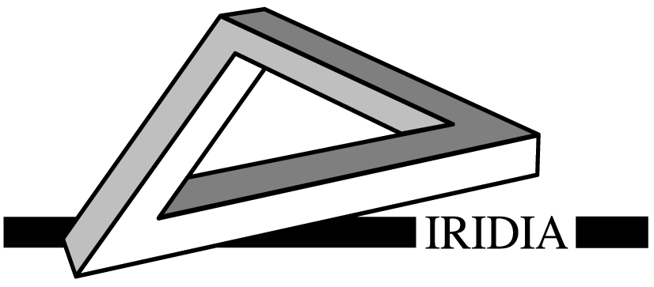
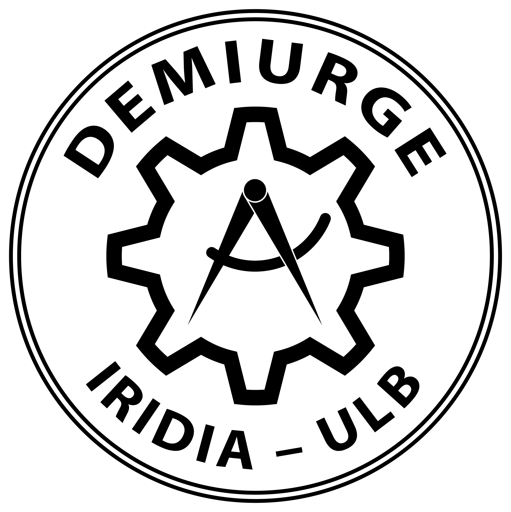
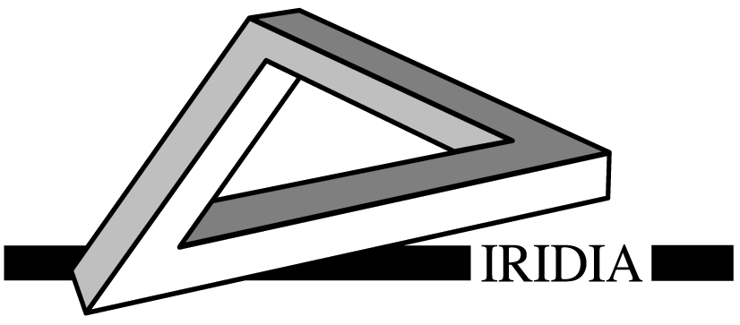
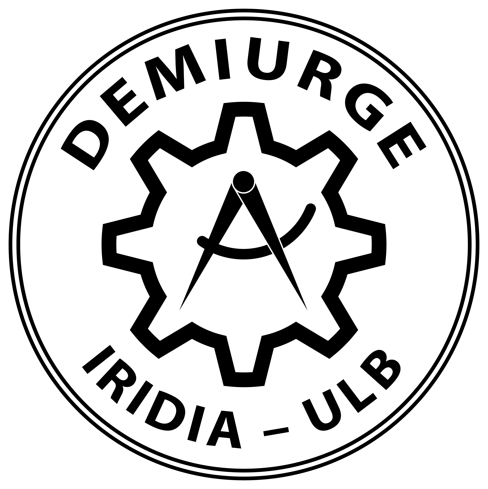
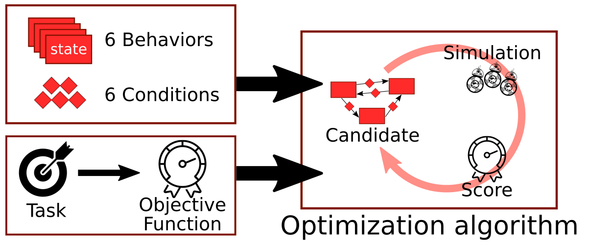
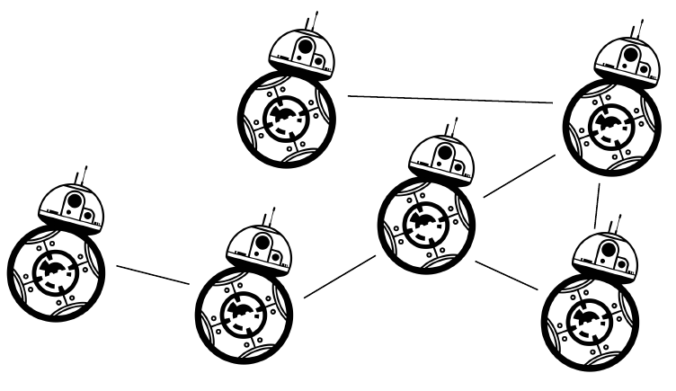
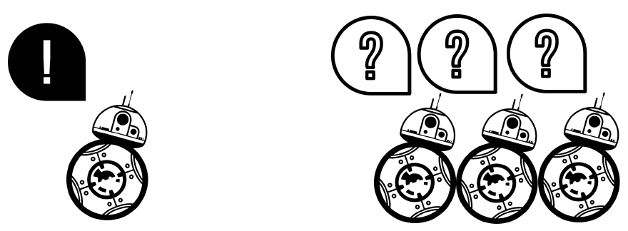
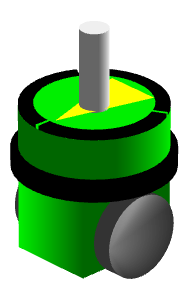
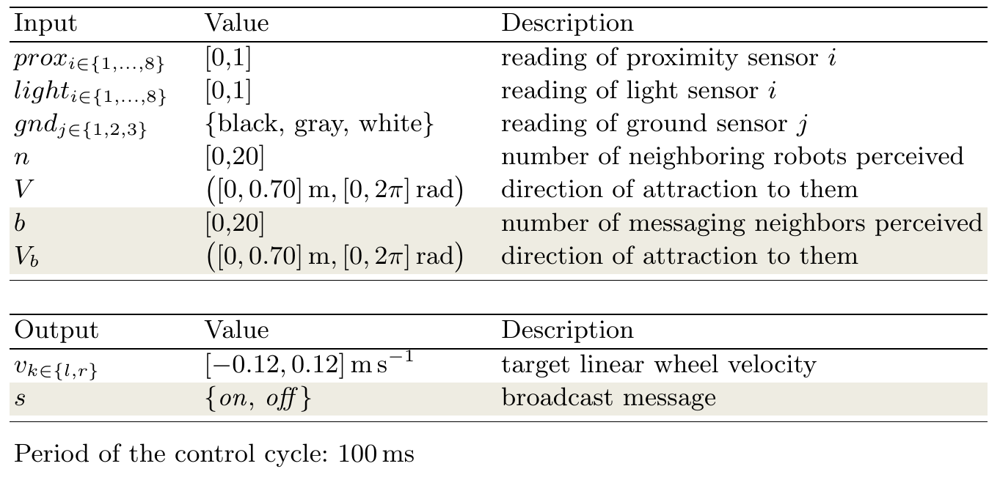

AutoMoDe-Gianduja
Automatic Design of Communication-based Behaviors for Robot Swarms
 



Robot swarms
- Large number of robots cooperating
- Self-organized
- Decentralized
In order to achieve
Some notes.
Design Methods
Manual design
-
Design done by hand by an expert.
Automatic design
-
Design automatically done by an optimization algorithm
Some notes. They are only visible using onstage shell.
Automatic Design
-
Evolutionary methods
-
Modular methods
Some notes. They are only visible using onstage shell.
AutoMoDe: Automatic Modular Design
- Control achitecture : Probabilistic Finite State Machine
- Optimization algorithm : any (e.g. irace in Francesca et al, SI (2014))

Some notes. They are only visible using onstage shell.
Our research question and objective
It is possible to automatically design a swarm of communicating robots using AutoMoDe ?

Do robots perform better with communication capabilities than without ?
Some notes. They are only visible using onstage shell.
Hypothesis
The automatic design process assigns a specific, task dependent
semantic to a message.

Idea
- Robots may send one message.
- The automatic design method defines a task-specific semantic: it associates a cause/effect to the message.
We demonstrate this idea on three tasks that require messages with different semantic.
Some notes. They are only visible using onstage shell.
EvoCom
EvoCom is ?
Some notes. They are only visible using onstage shell.
Robot: E-puck
Sensors
- Proximity
- Light
- Ground
- Range and bearing
Actuators

Some notes. They are only visible using onstage shell.
Reference Model 1 and 2

Differences between reference models 1 and 2 are highlighted
Some notes. They are only visible using onstage shell.
Behavioral Modules
| Behaviors |
Conditions |
| Exploration |
Black floor |
| Stop |
Gray floor |
| Phototaxis |
White floor |
| Anti-phototaxis |
neighbor count |
| Attraction |
Inverted neighbor count |
| Repulsion |
Fixed probability |
| Additonnal ones: |
|
| Attraction to message |
Message count |
| Repulsion to message |
Inverted message count |
Two new conditions and two new behaviors
Some notes. They are only visible using onstage shell.
Tasks
Some notes. They are only visible using onstage shell.
Evalutation and experimental protocol
Assessment with a swarm of 20 e-puck robots:
For each mission and each method optimization was run 15 times to obtain 15 instances of control software. Each run with 200 000 simulations
Each instance is evaluated once in simulation and once in reality
Some notes. They are only visible using onstage shell.
Results
Some notes. They are only visible using onstage shell.
Results
Some notes. They are only visible using onstage shell.
Results
Some notes. They are only visible using onstage shell.
Conclusion & future work
Some notes. They are only visible using onstage shell.